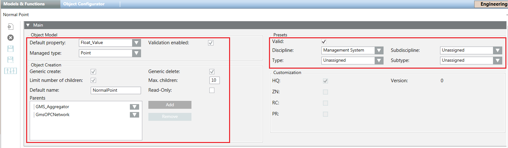
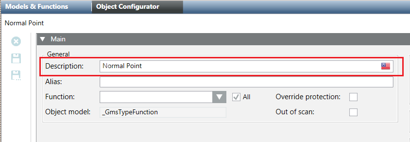

Data Point Type Configuration
The JSON file can contain data to configure a Data Point Type. It is possible to specify the following:
Data Point Type Configuration Data | ||
Data | Use | Description |
Description | Optional | List of values used as descriptions of the property. Each value must contain the following:
The empty list (“Description”: [ ]) resets the description while the name of data point type is assumed as default description. NOTE: During the re-import, if the Override protection flag is set, the description cannot be modified. |
ManagedType | Optional | A number representing the managed type of the element. |
DefaultProp | Optional | Property used as default for the object model. The empty string (“DefaultProp”: “”) resets the default property and in this case, the first property will be assumed as the default one. If the default property is part of a structure or a reference, the complete name must be specified (<name of structure>.<name of property> - for example: “Struct_Value.Int_Value”). If the default property is an element of a set, the name must be composed by the set name and the property index (<set name>[<index>] – for example: “SetChar_Value[1]”). Note that the index starts with “1”. |
Validation | Optional | True if the validation must be enabled. |
GenericCreate | Optional | True if the instances of this DPT can be created using the Object Configurator. |
GenericDelete | Optional | True if the instances of this DPT can be deleted using the Object Configurator. |
MaxChildren | Optional | Maximum allowed number of children of this type. The value |
ChildName | Optional | Default name for the instances of this DPT. The empty string (“ChildName”: “”) erases the default name. |
ChildNameReadOnly | Optional | True if the name of the instances is read-only. |
ParentTypes | Optional | List of the parent types. The empty list (“ParentTypes”: [ ]) removes the configured parent nodes. |
Classification | Optional | Object containing the data of the object model classification. For details, see Table Classification Data, below. The empty object (“Classification”: { }) resets the classification data. |
Classification Data | ||
Data | Use | Description |
Valid | Optional | Validity flag. If false, the classification data is set but considered invalid. |
Disc | Optional | Discipline number. The value NOTE: If Disc or SubDisc are missing (it is enough that only one of them is missing), discipline and subdiscipline are ignored. |
SubDisc | Optional | Subdiscipline number. The value NOTE: If Disc or SubDisc are missing (it is enough that only one of them is missing), discipline and subdiscipline are ignored. |
Type | Optional | Type number. The value NOTE: If Type or SubType are missing (it is enough that only one of them is missing), type and subtype are ignored. |
SubType | Optional | Subtype number. The value NOTE: If Type or SubType are missing (it is enough that only one of them is missing), type and sub-type are ignored. |
Example
{
"DPTData": {
"DPTS": [
{
Name": "*",
"DPES": [
{ "Name": "MyMandatoryFields", "Type": "REF", "Ref": "_GmsMyMandatoryFields" }
]
},
{
"Name": "Test_NormalPoint",
"Description":[{"Culture":"en-US", "Text":"Normal Point"}],
"ManagedType": 0,
"DefaultProp": "Float_Value",
"Validation": true,
"GenericCreate": true,
"GenericDelete": true,
"MaxChildren": 10,
"ChildName": "NormalPoint",
"ChildNameReadOnly": false,
"ParentTypes": ["GMS_Aggregator", "GmsOPCNetwork"],
"Classification": {
"Valid": true,
"Disc": 0,
"SubDisc": 0,
"Type": 0,
"SubType": 0
},
"DPES": [
{ "Name": "Char_Value", "PvssType": { "PvssType": "CHAR" } },
{ "Name": "UInt_Value", "PvssType": { "PvssType": "UINT" } },
{ "Name": "Enum_Value", "PvssType": { "PvssType": "UINT" } },
{ "Name": "Int_Value", "PvssType": { "PvssType": "INT" } },
{ "Name": "Float_Value", "PvssType": { "PvssType": "FLOAT" } },
{ "Name": "Bool_Value", "PvssType": { "PvssType": "BOOL" } },
{ "Name": "Bit32_Value", "PvssType": { "PvssType": "BIT" } },
{ "Name": "Duration_Value", "PvssType": { "PvssType": "UINT" } }
]
}
]
}
}
The following image shows the corresponding fields in the Models & Functions tab:

The following image shows the corresponding fields in the Object Configurator tab:

All the configuration data described here is ignored if the Name of the Data Point Type is an asterisk (“*”), because this name does not identify a Data Point Type but a set of mandatory Data Point Elements.
During the first import, if the previous configuration data is not present in the JSON file, the default values are assumed.
In the subsequent re-import, if one configuration data is not present in the file, the value is not changed.